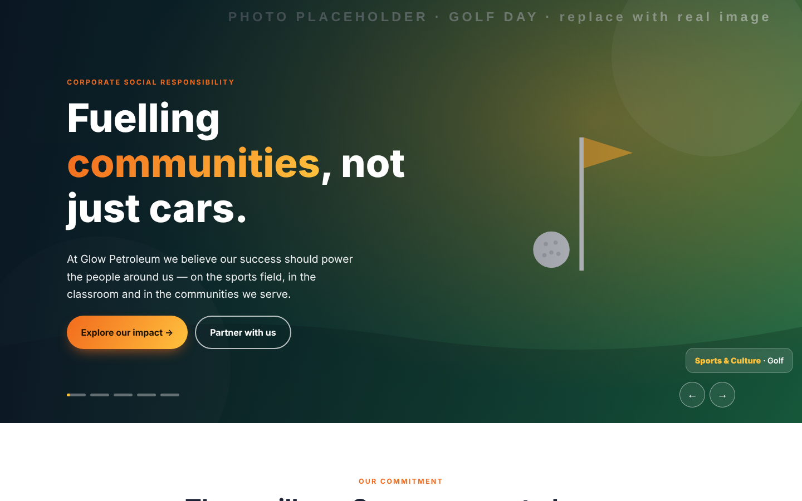
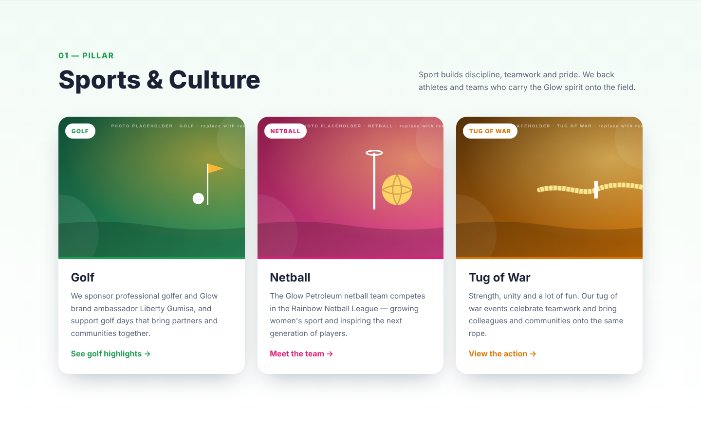
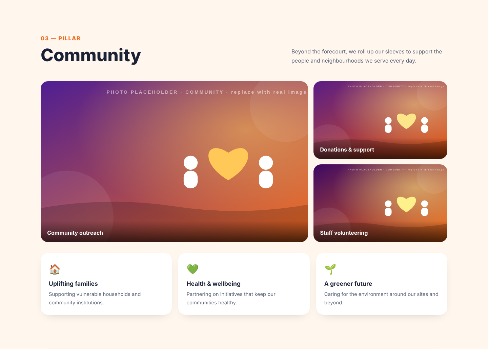
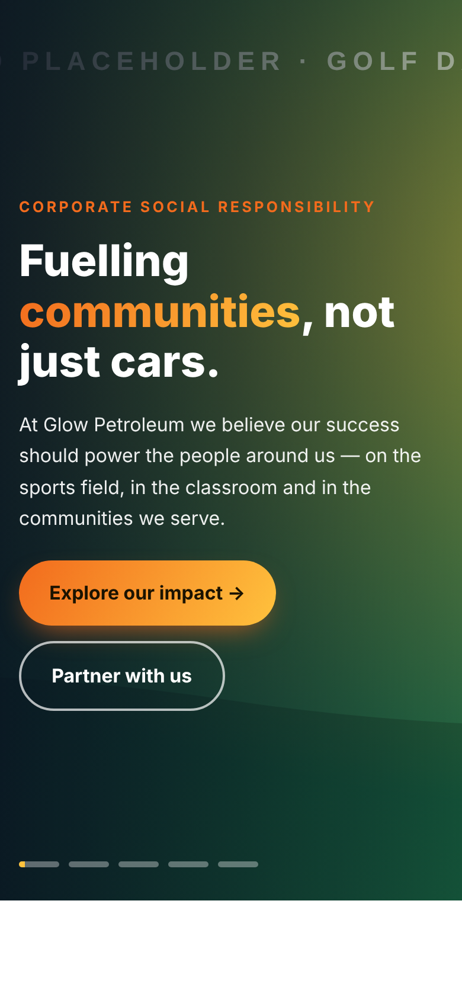

Step-by-step instructions for putting the redesigned Corporate Social Responsibility page on the WordPress site, replacing the photos and text, and keeping it up to date.

All files are in the GitHub repository ChiedzaRene/glow-petroleum-csr. On GitHub, click Code → Download ZIP and unzip it on your computer.
| File | What it is for |
|---|---|
single-file/glow-csr-wordpress-paste.html | Option A. The whole page in one file. Paste it into one WordPress block. |
wordpress-version/option-2-gutenberg-blocks.txt | Option B. The page built from normal WordPress blocks. |
wordpress-version/glow-wp-blocks.css / .js | Optional copies of Option B's styles and script, for anyone who wants them in the theme. |
single-file/glow-csr-single-page.html | The same page as a complete web page. Double-click it to preview it in a browser. |
html-version/ | A developer version with separate HTML, CSS and JS files. |
mockups/ | Screenshots of the finished page on desktop and mobile. |
The new page has five parts, from top to bottom:
| Part | What it does |
|---|---|
| Header slideshow | Full-width photos fade every 6 seconds with a slow zoom. It has a headline, two buttons, progress dots, arrows and a caption, and visitors can swipe it on a phone. |
| Intro and stats | A short commitment statement and four stat boxes. |
| Pillar menu | Three buttons that stay at the top while visitors scroll: Sports & Culture, Academic and Community. |
| The three pillars | Sports & Culture (Golf, Netball and Tug of War cards), Academic (MSAA feature) and Community (photo gallery and impact cards) |
| Call to action | An orange "Get in touch" band linking to the Contact page |


Paste one file into one Custom HTML block.
Paste once into the Code editor, then edit everything visually.
Rebuild the layout with Elementor widgets, or paste file A into one HTML widget.
<script>, which the slideshow needs. To check, go to and look at Role. On a WordPress Multisite network, only a Super Admin can do this.| Where | How many | Best size |
|---|---|---|
| Header slideshow | 5 (you can add or remove some) | 1920 × 1080, landscape |
| Golf / Netball / Tug of War cards | 1 each | 1200 × 900 |
| MSAA | 2 | 1200 × 900 |
| Community gallery | 3 | 1200 × 900 |
Use the file single-file/glow-csr-wordpress-paste.html.
The page ships with drawn placeholder pictures that are stored inside the file as very long lines of text starting with data:image/svg+xml;base64,. You replace each one with the web address (URL) of a real photo.
https://glowpetroleum.com/wp-content/uploads/2026/10/golf-day.jpg.Each picture has a label called alt="…" right after its long src="…". Use Ctrl + F to find the label, then replace the src just before it.
BEFORE (shortened – the real line is very long): <img src="data:image/svg+xml;base64,PHN2ZyB4bWxucz0i....Pg==" alt="Golf"> AFTER: <img src="https://glowpetroleum.com/wp-content/uploads/2026/10/golf-day.jpg" alt="Golf">
src=", then Shift + click just before the closing ".| Search for | Where the picture appears |
|---|---|
alt="Glow Petroleum golf day" | Header slide 1 (Golf) |
alt="Glow Petroleum netball team" | Header slide 2 (Netball) |
alt="Tug of war competition" | Header slide 3 (Tug of War) |
alt="MSAA students" | Header slide 4 (MSAA) |
alt="Glow Petroleum community outreach" | Header slide 5 (Community) |
alt="Golf" · alt="Netball" · alt="Tug of war" | The three Sports & Culture cards |
alt="MSAA learners" · alt="MSAA event" | Academic section: large photo · small overlapping photo |
alt="Community outreach" · alt="Donations" · alt="Volunteering" | Community gallery: large photo · top right · bottom right |
Edit in the text file and paste it into the block again, or edit inside the block, where Ctrl + F also works.
Find the words with Ctrl + F and type over them. Only change the words between the tags, never the < > parts.
<h3>Netball</h3> <p>The Glow Petroleum netball team competes in the Rainbow Netball League…</p>
& instead of a plain &, for example Sports & Culture. Other characters such as apostrophes and dashes are fine as they are.Links live in href="…". The "See golf highlights", "Meet the team", "View the action" and "Learn more about MSAA" buttons currently point to #, which goes nowhere. Replace each # with a real page or news-article URL. "Get in touch" points to /index.php/contact-us/. Change it if your contact page has a different address.
<a class="gc-more" href="#">Meet the team →</a> <a class="gc-more" href="https://glowpetroleum.com/index.php/netball/">Meet the team →</a>
Each slide is one small block. To add a slide, copy a whole block and paste it below the last one, then change the picture, the caption and the alt text. To remove a slide, delete its whole block. The dots update by themselves.
<div class="gc-slide" data-caption="<b>Community</b> · Giving back"> <img src="https://…/your-photo.jpg" alt="Describe the photo"> </div>
All the colours are set in one place near the top of the <style> section. Change a hex code and the whole page follows.
| Setting | Current | Used for |
|---|---|---|
--glow-orange | #f26b1d | Main brand colour, buttons, highlights, Community |
--glow-yellow | #ffc23d | Second gradient colour, slideshow progress bar |
--glow-navy | #0f1d3a | Academic background, dark text accents |
--glow-sport | #1f9d55 | Sports & Culture accent |
--glow-academic | #2f6fdb | Academic accent |
Slideshow speed: search for DELAY = 6000 and change the number (in milliseconds, so 6000 = 6 seconds). Then search for gcBar 6s and change it to match (for example gcBar 8s).
Use the file wordpress-version/option-2-gutenberg-blocks.txt. Once it's in, your team can change photos and text by clicking, with no code.
| To change… | Do this |
|---|---|
| Slideshow photos | Click the photos at the top of the page (this is a Gallery block). Use Add in the toolbar to add photos, or click a single photo → Replace. Drag photos to reorder them. |
| Card / MSAA / Community photos | Click the image → Replace → Open Media Library. |
| Any text | Click it and type. |
| Button links | Click the button, then the 🔗 link icon in the toolbar. |
| Community captions | Click the caption under each community photo. |
glow-hero, glow-card glow-card--golf and glow-section glow-sport. Don't clear these. When you duplicate a block, the classes come with it.Paste glow-wp-blocks.css into , and add glow-wp-blocks.js as a Site Wide Footer JavaScript snippet with the free WPCode plugin. Then delete the first and last Custom HTML blocks.
glow-csr-wordpress-paste.html into it.Set up the brand first in : Primary #f26b1d, Secondary #ffc23d, Text #1b2236, Accent #0f1d3a. In Global Fonts, use Montserrat 800 for headings and Poppins for body text. Then build each section:
| Section | Widgets and settings |
|---|---|
| Header slideshow | Pro: Slides widget with one slide per photo. Turn on Ken Burns Effect, set Autoplay Speed to 6000, Height to 90vh, and the Background Overlay to navy at 60%. Free: a Container whose Background Type is Slideshow (add photos, turn on Ken Burns), with Heading, Text Editor and two Button widgets inside. |
| Intro + stats | A Container with a Heading and Text Editor, then a 4-column Container of Counter widgets (3, 3, MSAA as a Heading, 100%), each on a light peach background with rounded corners. |
| Pillar menu | A Container holding 3 Button widgets linking to #gc-sport, #gc-academic and #gc-community. Pro: Advanced → Motion Effects → Sticky: Top. |
| Sports & Culture | Container with CSS ID gc-sport (Advanced tab). 3 columns, each with an Image Box (free) or Call to Action (Pro). Set the hover animation to Grow and add a coloured top border per sport: green, pink, amber. |
| Academic – MSAA | CSS ID gc-academic, background #0f1d3a. 2 columns: an Image on the left; on the right a Heading, Text Editor, Icon List with ✓ icons, and a Button. |
| Community | CSS ID gc-community. A Basic Gallery (free) or Gallery (Pro, masonry with lightbox), then 3 Icon Box widgets. |
| Get in touch | A Container with a Gradient background (#f26b1d → #ffc23d), border radius 30, plus a Heading and a Button. |
On every section, set Advanced → Motion Effects → Entrance Animation to Fade In Up for the scroll-in effect. Check phones with the 📱 Responsive Mode icon at the bottom of the panel.
| Problem | Fix |
|---|---|
| The slideshow doesn't move and the sections stay invisible or plain | The script was removed when you saved. Log in as an Administrator and paste again (see Section 3). Some security plugins (Wordfence, iThemes) also block scripts in posts. Allow it, or use the WPCode method from Section 7. |
| Changes don't show on the live site | Clear the cache. Caching plugins such as LiteSpeed, WP Rocket, W3 Total Cache and Autoptimize each have a Purge / Clear cache button in the top admin bar. Then refresh your browser with Ctrl + F5. |
| The page is squashed with a sidebar, or there are white gaps at the sides | Set the page Template to Full Width or No Sidebar (Section 3, step 4). |
| The page title shows twice | Tick Disable title in the page sidebar, or hide it in the theme's page options. |
| The pillar menu hides behind the site's top menu when scrolling | Search the code for position: sticky; top: 0; and change 0 to the height of your site header, for example top: 80px;. |
| A photo shows as a broken image | The URL is wrong. Copy it again from Media and make sure it ends in .jpg, .png or .webp and sits inside the quotes. |
| The layout suddenly looks broken after editing | A tag was probably deleted by accident. Use Revisions in the page sidebar to go back, or paste a fresh copy of the file and redo the changes. |
| "Invalid content" warning (Option B) | Click Attempt recovery. If that doesn't work, use ⋮ → Resolve → Convert to HTML for that one block. |
| The fonts look different | Some privacy or speed plugins block Google Fonts. The page then uses a similar system font, which is fine. To force the fonts, allow fonts.googleapis.com in the plugin. |
| Arrows or buttons look odd | The theme's button styles are overriding the page. Use Option A, whose styles are protected inside .glow-csr, or ask a developer to raise the CSS priority. |
data:image: there should be no results.alt description.href="#" button is changed to a real link or removed.
On phones, the cards stack, the pillar menu scrolls sideways, and visitors can swipe through the slideshow. Check this before publishing, because most visitors arrive on a phone.